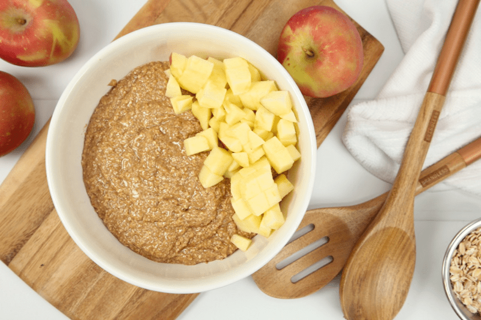
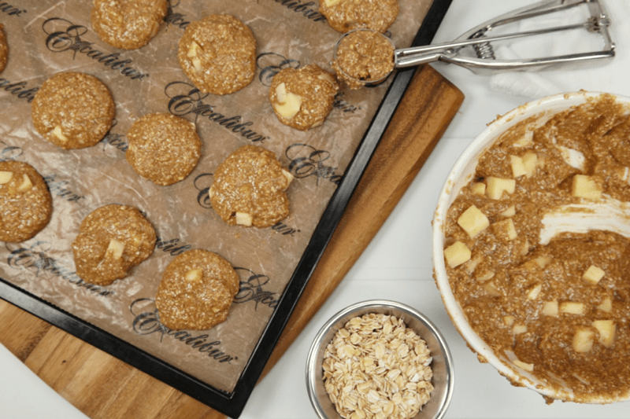

Apple Cinnamon Oatmeal Cookies

I think that you can agree that there are many reasons why we consume food. The obvious (to you and I) and the most important one being to obtain nutrition for a healthy and happy body.
Although this isn’t necessarily the case for the large majority of people, the awareness is increasing!
We are just starting to break that stigma that healthy eating equates to tasteless, boring food. And let’s face it, it is very important to people that they enjoy their food, and rightfully so. That goes for not only taste, but sight, smell, and texture.
We tend to turn to foods that stimulate our mental and emotional wellbeing, even if the choice of food isn’t optimal for our physical wellbeing. I feel that this will always be the case, we are emotional creatures… so in my book, I feel and believe that we don’t have to sacrifice any of those things listed above.
The key is to crowd out the toxic/processed ingredients, by bringing in more and more healthy whole food ingredients… all without adversely affecting the sensory properties. Sadly, most people don’t expect ‘healthy’ alternatives to taste as good as their fond memories of comfort food… but little do they know, they can actually taste even better!
With all of that being said, I am going to share this recipe with you because I feel that it meets all the sensory criteria. To me it looks rich and hardy, making me want to sink my teeth right into them. The smell…. oooh my, as they are dehydrating there is almost a “butter” aroma that swirls through the air. Textually, they are chewy… toothsome as some may say. And the flavor… well, they have a honey “buttery” taste with a pop of apple in every other bite. Nothing sacrificed here! Enjoy!
Ingredients:
Yields 28 (2 Tbsp / 32 g) ) cookies
- 3 cups (290 g) gluten-free, rolled oats
- 1 tsp (7 g) Himalayan pink salt
- 1 tsp (3 g) ground Ceylon cinnamon
- 1 cup (235 g) cashew or almond butter
- 1/2 cup (159 g) maple syrup
- 1/4 cup (80 g) raw honey
- 1 1/2 tsp (6 g) vanilla extract
- 1 cup small (135 g) diced apple chunks
Preparation:
- In a food processor, fitted with the “S” blade, combine the oats, cinnamon, and salt. Process until the oats are broken down to a small crumble / flour-like texture.
- Remove the lid and add the cashew butter, sweetener, honey, and vanilla. Process until the dough collects into a ball as it spins.
- You can use almond butter in place of the cashew butter if need be.
- If the dough remains crumbly, add a tablespoon of water.
- Hand mix in the diced apple.
- Create the cookies with a 1/4 cup cookie measuring scoop. Flatten them a little bit in the palm of your hand and place them on the mesh sheet that comes with the dehydrator tray.
- Don’t flatten them while they are sitting on the mesh sheet. This will push the dough into the itty-bitty squares, causing them to stick to the sheet.
- If they are really sticky, start the drying process by placing them on the non-stick sheet that comes with the dehydrator. The texture of the cashew or almond butter will make a difference in the end product.
- Dehydrate at 145 degrees for 1 hour, then reduce to 115 degrees (F) and continue drying for about 12+ hours.
- The cookies won’t ever get crispy or crunchy due to the type of ingredients used. They are done when the outside isn’t tacky anymore.
- The cookies will last longer stored in the fridge for up to 2 weeks and up to 3 months in the freezer. But to be honest, they taste incredible right out of the dehydrator or later warmed up.
The Institute of Culinary Ingredients™
- To learn more about maple syrup by clicking (here).
- Raw honey isn’t vegan but I still use it now and again. Read (here) why I like to.
- Why do I specify Ceylon cinnamon? Click (here) to learn why.
- Are oats gluten-free? Yes, read more about that (here).
- Are oats raw? Yes, they can be found. Click (here) to learn more.
- Do I need to soak and dehydrate oats? Not required but recommended. Click (here) to see why.
Culinary Explanations:
-
Why do I start the dehydrator at 145 degrees (F)? Click (
here) to learn the reason behind this.
-
When working with fresh ingredients it is important to taste test as you build a recipe. Learn why (
here).
-
Don’t own a dehydrator? Learn how to use your oven (
here). I do however truly believe that it is a worthwhile investment. Click (
here) to learn what I use.


© AmieSue.com